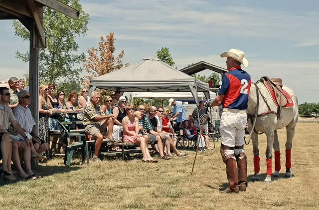
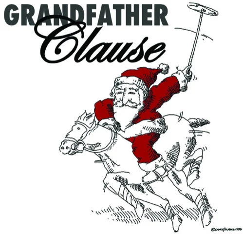
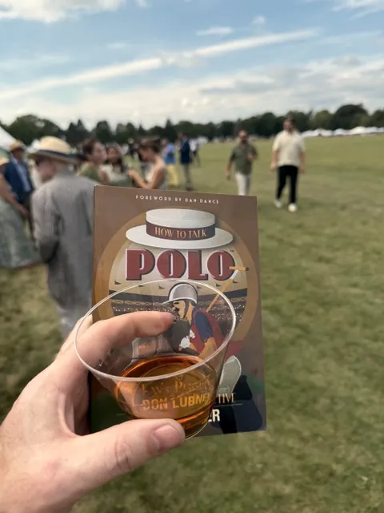

By Don Lubner, polo announcer
A fan’s guide to polo, from the announcer’s booth
For years Don Lubner sat beside the play-by-play at the Milwaukee Polo Club, telling the crowd what they were actually watching. How to Talk Polo puts that commentary on paper: the rules, the words and the stories, with cartoons and caricatures to help it stick.

“Finally, a polo book designed for your back pocket, not your coffee table.”
Dawn Garvey Redman, commentator, BG Vero Beach Polo Club“If you’re just getting ready to watch your first chukker, this is the guide you’ve been looking for!”
Steve Lewandowski, polo announcer, San Diego Polo Club, ESPN, Fox Sports“Every polo club needs a Don Lubner and family.”
William Crisp, author, A Guide to Polo Commentary
Written for the sideline, not the saddle
You don’t need to ride to enjoy polo. You need to know what you’re looking at. Don wrote for the fan on the sideline, with a foreword by Dan Dance, his partner in the Milwaukee Polo Club booth.


Inside the book
The rules, and the people who play by them
- The rules, explained plainly
- Polo poetry, cartoons and caricatures
- Polo Princesses: notable women players
- LGBTQ in the USPA
- Polo Past Your Prime: the older players
- Para-Polo Participants
Six words to start with
All 43 polo terms →- chukkernoun
- One period of play, about seven minutes long. A match runs four to six of them.
- ponynoun
- Every polo horse is called a pony, however tall it is.
- handicapnoun
- A player’s rating, from −2 to 10 goals. It measures skill, not how many goals they score.
- line of the ballnoun
- The path the ball is travelling. The rider following it has the right of way.
- ride-offnoun
- Two riders pressing shoulder to shoulder, each pushing the other off the line.
- hookverb
- To block an opponent’s swing with your own mallet.
Polo Posts
What to bring to your first polo match
A sample of how a Journal post looks: a short guide to packing for a first afternoon on the sideline, with picks from Don's Picks dropped in.
Read the post →
Latest polo posts
Every post →What to bring to your first polo match
A sample of how a Journal post looks: a short guide to packing for a first afternoon on the sideline, with picks from Don's Picks dropped in.
Stay in the conversation
New pages from Don’s archive, match-day notes and the occasional argument about the rules, sent now and then.
